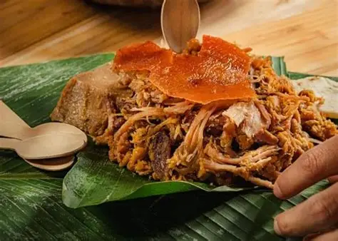
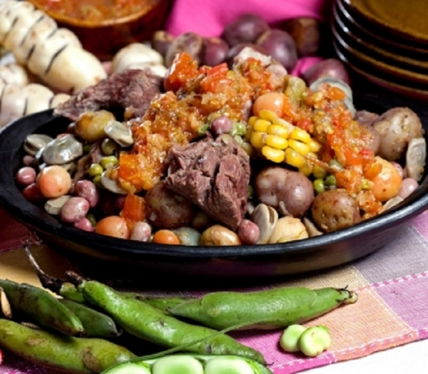
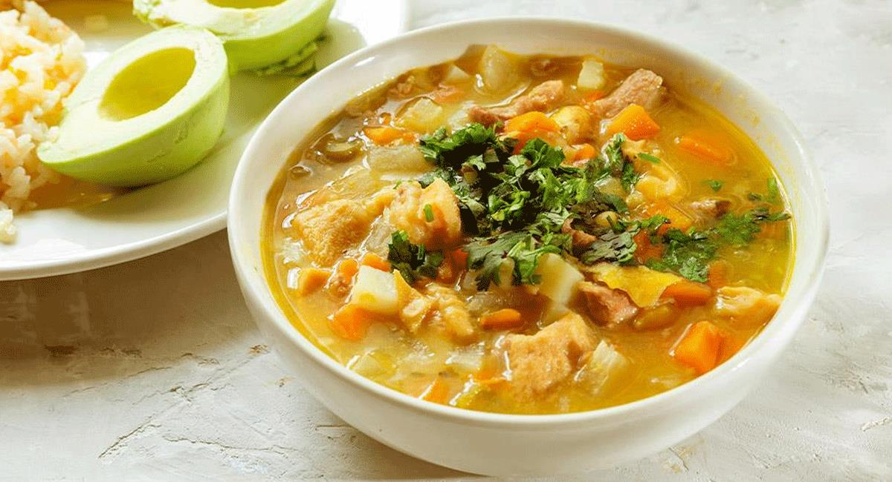

Ruta Gastronómica Colombiana
¡Ven y conoce los platos típicos de cada región Colombiana!
Región Andina
Ubicada en el corazón del país, está formada por las tres cordilleras de los Andes.
Es la región más poblada y variada en clima y cultura.
Aquí se encuentran ciudades principales como Bogotá, Medellín y Bucaramanga.

Platos Típicos
Bandeja Paisa
 |
La bandeja paisa es un plato tradicional de Antioquia. En la bandeja podras encontarr ingredientes como : Arroz Frijoles Carne molida Chicharrón Chorizo Huevo frito Plátano maduro Arepa y aguacate. Ademas es una comida muy completa y representativa de la región. |
Ajiaco Santafereño
 |
El ajiaco es un plato tipico santafereño. Se compone de: Sopa espesa de papas con pollo, mazorca y guascas, típica de Bogotá. Se acompaña con arroz, aguacate, alcaparras y crema de leche. |
Lechona Tolimense
|
 |
Cerdo relleno de arroz, arvejas y especias, horneado lentamente. Se sirve con arepa blanca y cuero crocante. |
Cocido Boyacense
|
 |
Guiso tradicional con carnes, papa, yuca, mazorca y verduras. Representa la cocina campesina boyacense. |
Mute Santandereano
|
 |
Sopa espesa con maíz, carne, papa, garbanzos y a veces vísceras. Muy nutritiva y característica de Santander. |
Región Orinoquía
Está ubicada en el oriente del país, en una extensa llanura.
Tiene un clima cálido y sabanas que se extienden hasta Venezuela.
La vida llanera gira en torno a la ganadería, la música y los caballos.
Sus platos típicos incluyen carnes asadas como la mamona.

Platos Típicos
Mamona (carne a la llanera)
|
|
Carne de ternera asada al carbón sobre estacas, sazonada solo con sal0. Emblema de los Llanos. |
Pisillo de carne seca o chiguiro
|
|
Carne desmechada y salada, preparada con cebolla y ají. Acompañada con yuca y plátano. |
Hallacas Llaneras
|
|
Masa de maíz rellena con guiso de carne, envuelta en hojas de plátano y cocinada al vapor. |
Cachama Asada
|
|
Pescado típico de los ríos de la región, asado entero y acompañado de yuca o arroz. |
Tungos Llaneros
|
|
Bocados de masa de arroz con queso, envueltos en hoja de plátano y cocinados al vapor. |